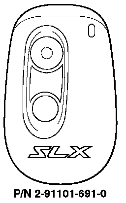
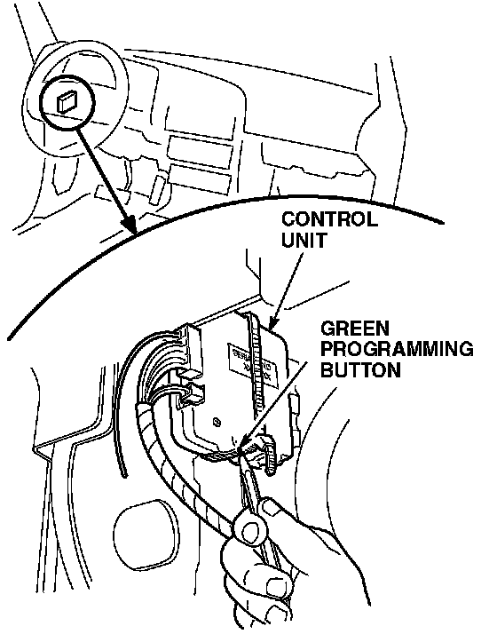

1996 SLX - Dealer - Keyless/1997 SLX - Factory-Installed
1996 SLX with dealer-installed keyless system1997 SLX with factory-installed security system

NOTES:
^ The system uses a stacking-type memory that accepts up to two transmitters. If you program a third transmitter, the memory for the first transmitter is pushed out, and it will no longer work.
^ To clear a lost or stolen transmitter from the system's memory, program a transmitter two times. This will remove the missing transmitter from memory, since only two transmitter codes can be accepted.
^ Another way to clear a lost or stolen transmitter is to erase all transmitter codes and then reprogram them. To do this, refer to the security system owner's manual.
Programming a Transmitter
1. Remove the driver's side lower dashboard panel.
2. Turn the ignition switch to ON.

3. Use a pen or pencil to press and hold down the green programming button on the side of the control unit until the interior lights come on. They will come on for 5 seconds. (Steps 3 and 4 must be done within 5 seconds of each other.)
4. Press and release the top button on the transmitter. Verify that the LED goes out, the siren chirps once, and the front sidemarker lights flash to confirm that the transmitter's code was accepted by the control unit.
5. If you have another transmitter to program, repeat steps 3 and 4.
Ordering a Transmitter
Transmitters can be ordered only by authorized Acura dealers. Order them from American Honda using normal parts ordering procedures.
Batteries for the Transmitter
The battery number is CR2025. Each transmitter uses one battery.